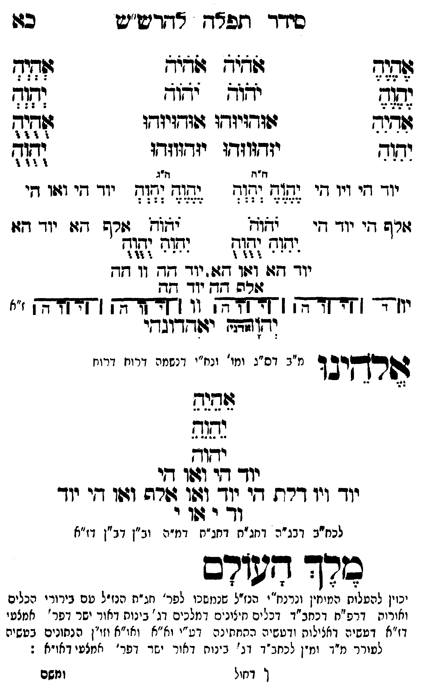

Neue Klartextfassung
=== טבלה === [טור ימין] אֶהֶיֶהֶ יֶהֶוֶהֶ אִהִיִהִ יִהִוִהִ [טור אמצעי] אֹהֹיֹהֹ אֹהֹיֹהֹ יֹהֹוֹהֹ יֹהֹוֹהֹ אוּהוּיוּהוּ אוּהוּיוּהוּ יוּהוּווּהוּ יוּהוּווּהוּ [טור שמאל] אְהְיְהְ יְהְוְהְ אֻהֻיֻהֻ יֻהֻוֻהֻ === סוף טבלה === === טבלה === [טור ימין] יוד הי ויו הי אלף הי יוד הי [טור אמצעי] [ה"ח ה"ג] יֶהֶוֶהֶ יְהְוְהְ יֶהֶוֶהֶ יְהְוְהְ יֹהֹוֹהֹ יֹהֹוֹהֹ יִהִוִהִ יֻהֻוֻהֻ יִהִוִהִ יֻהֻוֻהֻ יוד הא ואו הא יוד הה וו הה אלף הה יוד הה [טור שמאל] יוד הי ואו הי אלף הא יוד הא === סוף טבלה === [תרשים: ארבעה צירופי יהוה בקווים אופקיים ואנכיים המחברים את האותיות. לצדי התרשים וי וי וי וי; ז"א.] יאהדונהי יהוה (אדני) אלהינו [מ"ב דס"ג ומי' ונח"י דנשמה דרוח דרוח] אֵהֵיֵהֵ יֵהֵוֵהֵ יהוה יוד הי ואו הי יוד ויו דלת הי יוד ואו אלף ואו הי יוד וד י או י [לכח"ב דבג"ה דחג"ת דחג"ת דמ"ה וב"ן דב"ן דז"א] מלך העולם [יכוין להעלות המוחין ונרנח"י הנז"ל שנמשכו לפר' חג"ת הנז"ל עם בירורי הכלים ואורות דרפ"ח דכחב"ד דכלים חיצונים דמלכים דג' בינות דאור ישר דפר' אמצעי דז"א דעשיה דכללות ורביעיה התחתונה דע"י וא"א ואו"א וזו"ן הנתונים בעשיה להעלותם עם יחידה דנפש לעורר מ"ד ומ"ן לכחב"ד דג' בינות דאור ישר דפר' אמצעי דאו"א:]
Original gegen neue OCR · Niqqud für Vergleich ausgeblendet
Original
=== טבלה === [טור ימין] אהיה יהוה אהיה יהוה [טור אמצעי] אהיה אהיה יהוה יהוה אוהויוהו אוהויוהו יוהוווהו יוהוווהו [טור שמאל] אהיה יהוה אהיה יהוה === סוף טבלה === === טבלה === [טור ימין]K046-001 יוד היK046-002 ויו הי אלף היK046-003 יוד הי [טור אמצעי] [ה"ח ה"ג] יהוה יהוה יהוה יהוה יהוה יהוה יהוה יהוה יהוה יהוהK046-004 יוד הא ואו האK046-005 יוד הה וו הה אלף ההK046-006 יוד הה [טור שמאל]K046-007 יוד הי ואו הי אלף האK046-008 יוד הא === סוף טבלה === [תרשים: ארבעה צירופי יהוה בקווים אופקיים ואנכיים המחברים את האותיות. לצדי התרשים וי וי וי וי; ז"א.] יאהדונהי יהוה (אדני) אלהינו [מ"בK046-009 דס"ג ומי'K046-010 ונח"י דנשמה דרוח דרוח] אהיה יהוה יהוה יוד הי ואו הי יודK046-011 ויו דלת הי יוד ואו אלף ואו הי יוד ודK046-012 י או י [לכח"בK046-013 דבג"ה דחג"ת דחג"תK046-014 דמ"ה וב"ן דב"ן דז"א] מלך העולם [יכוין להעלות המוחין ונרנח"י הנז"לK046-015 שנמשכו לפר' חג"תK046-016 הנז"ל עםK046-017 בירורי הכלים ואורות דרפ"ח דכחב"ד דכלים חיצונים דמלכיםK046-018 דג' בינות דאור ישר דפר' אמצעי דז"א דעשיה דכללות ורביעיה התחתונה דע"יK046-019 וא"א ואו"א וזו"ן הנתונים בעשיה להעלותם עם יחידה דנפש לעורר מ"ד ומ"ןK046-020 לכחב"ד דג' בינותK046-021 דאור ישר דפר' אמצעי דאו"א:]K046-022
OCR · fehlbar
כידר תפ"ח אחרטשיש לל אזגג- זזשיש לציד ז[דדד נשוב יאוק י(דזו- לל (אנר ג(ודזיזדו ז(ודזיזדו זז וד יזדזוגדו יזדווזדו וצ דז"ד ללK046-001 יוד חיK046-002 ויו גי 714 (17ו- (([- (7(-K046-003 יוד גי ו::ו דזי זיף דיK046-004 יוד דו - 63( [0זד (שרש דזוK046-005 יוד דזו וזח (היד שוח יהךח -') -- זיזו) ': "ל ' ו')ל )K046-006 יוד 7: (7וך דז .K046-007 יוד דץ 1ך דז- בכגבץK046-008 יוד 2ב י((-4- ([ח-ץ[ץצ-רךץ ן [זקחחר] זן [דקז-דךק [ [אקדרשבק "א זבד יד[ דובדץי זשרךקיב ד מ"בK046-009 דס"ג ומו'K046-010 ונח"י דנשמה דרוח דרוח לזזשצ לללל ישוך ידך שי ו:ך דדי יוךK046-011 ויו דרת די יוך וגו זורה ודוו די יוך - וך י'זןK046-012 י לכח"בK046-013 דבג"ה דחג"ח דחג"חK046-014 דמ"ה וב"ן דב"ן דז"א כרד דגש(דם יכוין להטלות המיין ונרנח" הנזילK046-015 שנמשכו לפר' ג"חK046-016 הנז"ל טםK046-017 בירורי הכלים ואורות דרפ"ח דכחב"ד דכל ים ח יצוניכי דמלניםK046-018 דג' בינות דאור ישר דפר' אמצעי דז"א דטשיה דאצילות ודטשיה ההחוזינה דט"יK046-019 וא"א ואו"א וזו"ן הנתונים בטשיה לטורר מיך ונז-ןK046-020 לכחב"ד דנ ' ב ינוחK046-021 דאור ישזד דפרץ אנזלעי דאו"א : ך דזול ומשםK046-022